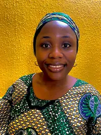

Martha Itohan Otasowie | WDD 130

Hello Everyone, My name is Martha Itohan Otasowie. I am a Nigerian and a mother of two.
I am
currently studying Web and Computer Programming. I love nature, it constantly reminds me of a
greater power. I enjoy meeting with people and in helping solve problems with people.
I also love learning.